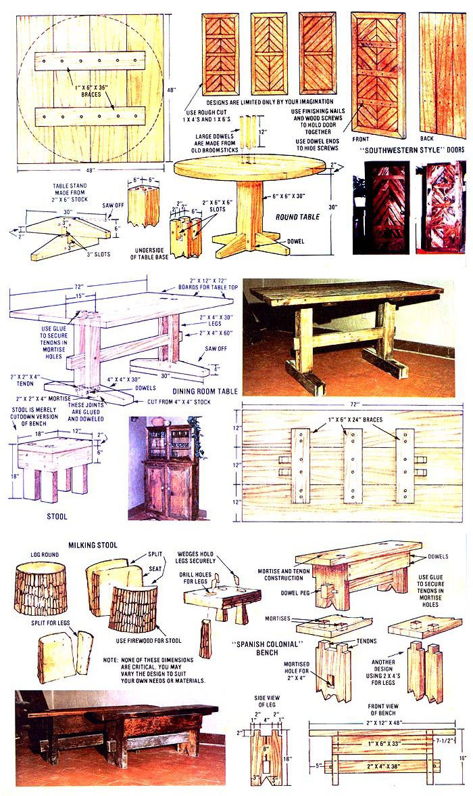

New Mexico homesteader James B. DeKorne has a "natural" moneymaker that should work for other back-to-the-landers too!
I supported our homestead family of four, during the winter of 1971/72, by making and selling Spanish-Colonial furniture. The business was a "natural" for me, for at least two reasons: [1] The rustic simplicity of this style of furnishing is very popular here in the Southwest, and [2] Spanish-Colonial designs are easy to construct with only the most rudimentary of hand tools.
That second point was especially important to me six or seven years ago because-at the time (before our wind powered electrical system was installed)-we had no electricity at all . . . and I built the pieces I made then the same way that Spanish furniture makers of a hundred years before made theirs: by hand.
This was not particularly difficult, but it was time-consuming . . . and that lowered our potential income considerably. Once I had my shop wired for 32-volt DC and I'd installed a few power tools designed to operate on that voltage, however, I immediately cut the time 1 had to spend on a piece by half . . . which, of course, doubled our income overnight.
So: I know, from personal experience, that anyone halfway capable of working with wood can earn enough to support a family by building the furniture you see here . . . even if he or she has to work entirely by hand. And if you're that same woodworker and you have electricity and some power tools to use . . . Spanish Colonial furniture most certainly can put a respectable income in your pockets.
Here, then, is the minimum set of hand tools you'll need to bust into this business: a hammer, crosscut saw, ripsaw, try square, hand drill with wood boring bits, set of wood chisels, and a plane. Those are the basics and, if you don't already own them, you can obtain them quite inexpensively. I personally like the Sears Craftsman brand of tools (they're a fortunate combination of good quality and reasonable price).
Now that's all you really need to get started and, at one time, it's all I used to construct a variety of tables, benches, and stools which sold for anywhere from $35.00 to $350.00 apiece. If you can afford it, though, it's awfully nice to have at least the following power tools: an eight- or nine inch, tilt-arbor table saw . . . a good jointer-planer . . . a quarter-inch (maybe even a half-inch, too) electric hand drill . . . and a portable circular saw.
Once again, 1 prefer to buy my tools from Sears . . . especially after wasting a lot of time and money on a "bargain", "no-frills" eight-inch table saw 1 found advertised in the back pages of Popular Science. Believe me, it ain't worth it! By the time I'd assembled the unit and added all the "accessories" (actually, necessities), 1'd have been better off if I'd just purchased a "ready to go" table saw-complete with stand and table extensions-from Sears or a good hardware store in the first place.
No matter who you buy 'em from, though, these power tools will quickly pay their way. The table saw, for instance, will not only simplify and speed your work considerably . . . it'll also enable you to make far more accurate cuts. (Only a master craftsman, with years of experience, can duplicate by hand a cut that the rankest amateur turns out with ease on a power saw.)
A jointer-planer-which enables you to fit boards together perfectly and create "new" lumber from old siding and beams-is almost as indispensable. I don't know how 1 ever got along without mine. The same goes for my electric drill . . . and the only reason 1 don't have a portable circular saw is because I can't find one that'll run on my homestead's 32-volt DC (which is a problem that won't bother you if you have "ordinary" 110volt AC electricity to work with).
If you've worked with wood at all, you should have little trouble building the simple furniture that I've constructed and sold. And if you've never handled wood before but you'd still like to give this business a try . . . no problem: Check around for the nearest high school or technical-school adult education program and enroll in a semester's worth of night wood-shop classes. If you have normal coordination, that's about all you should need to allow you to produce the rustic, straightforward Spanish Colonial pieces that I've found so profitable.
Because of economic necessity (as much as for aesthetic reasons), I started out building my furniture from old weathered pine that I got by tearing down abandoned barns and chicken coops in exchange for hauling them away. That was a good deal for both me and for the people who wanted to get rid of the old buildings ... until the weathered wood began selling for a premium price to interior decorators. Consequently although I have been known to pull a few particularly nice boards off my goat shed to complete a piece-I wound up building my furniture from rough-cut lumber I purchased at a local sawmill. (And I do have to admit-as much as 1 like to recycle-that the sawmill lumber has its advantages: It doesn't split and splinter so easily and it doesn't soak up nearly as much stain or oil finish as the old boards and beams I used to scavenge.)
The mill I deal with sells what it calls "short lumber" (anything under eight feet in length) for ten cents a board. That's right: No matter what the piece of wood's other dimensions might bet" X 4", 1" X 12", 2" X 10", or whatever-if the plank is less than eight feet long, it sells for a dime. And, since I have yet to use a board longer than 6' 6" in my furniture, these ten-cent chunks of wood represent what has to be one of the last real bargains in an inflationary world.
Drawbacks? Yeah, there is one: The dime boards I buy come off the saw so green that I sometimes think the wood's still alive! And if I don't cure the planks for at least six months before I use them, they shrink so much that all the carefully fitted joints in a piece of furniture become huge gaps as the wood continues to dry.
So OK, I let the boards cure for six months. If you're too impatient to wait that long (or if you prefer cleaner, smoother wood that's easier to work with), you can always shell out bigger bucks for kiln-dried, planed lumber purchased from a lumberyard. I'll leave that decision to you.
If you do buy new, planed boards and planks-of course-you can make them look nearly as weathered as old barn wood by burning their surfaces with a blowtorch and then buffing them with a circular wire brush mounted in an electric drill. (While this is almost as good as the real thing, I find that the finish left by this treatment has a somewhat artificial look. Again, you pays your money and you takes your choice.)
When I started making furniture, I concentrated on a few simple designs until I had them down cold and could turn out, say, several basic benches see accompanying illustrations-in a single day. (And, at $35.00 apiece, that's not a bad day's wages.)
Eventually, of course, I worked my way up to more ambitious projects. One day, for instance, a customer who had purchased a couple of the benches (they were quite popular for patio seating and as potted houseplant "tables") asked me if I could make a round game table and four stools as a Christmas present for her family.
Well, I had never built anything like that before. But it only took me a few minutes to sketch up a design that she liked (see illustration), which I then fabricated from weathered barn siding and a brace that I scavenged out of an abandoned mine shaft! (When you're an old wood scrounger, you don't overlook anything: One of my nicest pieces was made mostly from boards taken off a defunct outhouse!)
The stool, bench, and tables you see here are so straightforward and simple that their diagrams are self-explanatory. The only "difficult" thing about them is cutting the mortises which hold them together . . . and that's not really hard to do if you rough the holes out with an electric drill and then square 'em up with a wood chisel.
(Although I started out using no nails at all in any of the pieces I built, I'm now a firm believer in the traditional mortise-and-tenon joints . . . that are se cured and reinforced by finishing nails and screws which have been countersunk and hidden by dowel ends. This insures both authenticity of design and that the normal seasonal variations in humidity will never cause my furniture's joints to separate.)
The doors and the trastero (Spanish for "hutch" or "cupboard") shown here are slightly more complex than the bench and tables and probably shouldn't be attempted if you don't have power tools. It's not that they're difficult to construct they aren't-so much as that it's just too tedious to cut the 45° angles used in them with only hand tools. (The extra effort needed to make good, tight-fitting 45° joints would take so much of your time that you'd have to charge more than the finished pieces are worth just to pay yourself a reasonable hourly wage.)
The trastero, incidentally, is a slightly modified version of a design which appeared in the February 1977 issue of Workbench magazine. (The plans are available for $1.00 from Workbench, 4251 Pennsylvania Ave., Kansas City, Missouri 64111.) It's a very simple piece of furniture to build-I can construct one in three leisurely days-and it would sell in the galleries of Santa Fe today for at least $400.00.
When you build furniture of wood especially old wood-it's extremely important that every exposed surface is finished so well that people don't get splinters in their anatomy every time they use it. It's also important that the furniture's finish "looks right" (otherwise, it simply won't sell).
After experimenting a bit, I finally settled on a stain, plus bar varnish or lacquer, finish for my work.
The stain, which is nothing but small pieces of ordinary roofing tar dissolved in turpentine (try various combinations until you get the shades and tones you want), is very easy to make and brings out the beautiful grain and texture of pine as well as or better than the expensive stains sold by some paint companies. Old engine oil mixed with kerosene will also achieve a similar effect.
Once the stain is thoroughly dry, it's covered by several thick coats of bar varnish or lacquer. (I particularly like Deft, which brings out the grain in a piece of wood, dries to a semi gloss finish, and cures into a highly protective coating. For tabletops-which get a lot of wear-a polyurethane or Varathane bar varnish is advised.) The important thing to remember is to put on enough of the final coat to completely seal each piece of furniture and "glue down" its splinters.
When I was marketing my furniture here in New Mexico, I offered it on consignment through art galleries and antique stores. (The usual deal was that the shop owner received one-third of the selling price.) That was in the beginning. Before long, however, word-of-mouth advertising started bringing my customers directly to me.
If my experience is any indication, there's a steady and growing demand for this Spanish-Colonial houseware. Yes, I know it's the traditional furniture down here in the Southwest and my experiences may not be 100% applicable in all sections of the continent. But 1 also know that the general trend in both the United States and Canada is toward functional simplicity in every area of life... which makes me think that the first guy or gal in your neck of the woods who markets this kind of stool, bench, table, etc. just might clean up.
If you're the individual who gives the idea a try, don't ever forget that a piece of furniture made from old barn beams and weathered siding has a look and feel of authenticity that's much in demand these days. Your work, of course, should never be represented as genuine antiques . . . and there's no need to when there's such a lively demand for good-looking modern variations (built from real wood!) on the ancient Spanish-Colonial theme. Represent your pieces that way and-if they're well crafted-you should be able to sell all you can make.
You'll have to set your own prices . . . since inflation, raw materials, demand, competition, etc, vary so much from one part of the continent to another. But never underprice your work. Back in 1971working only with hand tools-I was able to turn out $100 worth of finished furniture a day. You should be able to do double that (and then some, if you allow for inflation) with power tools.
To sum up, then, I know that only a few hundred dollars' worth of tools and a modicum of woodworking skill can be parlayed into a very decent income by anyone who wants to get out of the rat race and become his or her own boss. 1 know because I've done it (and I'd probably still be building furniture today if my business of importing wood-burning water heaters from Mexico hadn't suddenly taken off like a skyrocket).
And even if you never sell a single piece you make because you prefer to furnish your own house with it... I still recommend that you build some Spanish Colonial furniture. There's a real satisfaction in outfitting your home with something you made yourself... especially when you know you can leave it to your grandchildren!
|
 PHOTOS BY THE AUTHOR |
|
|